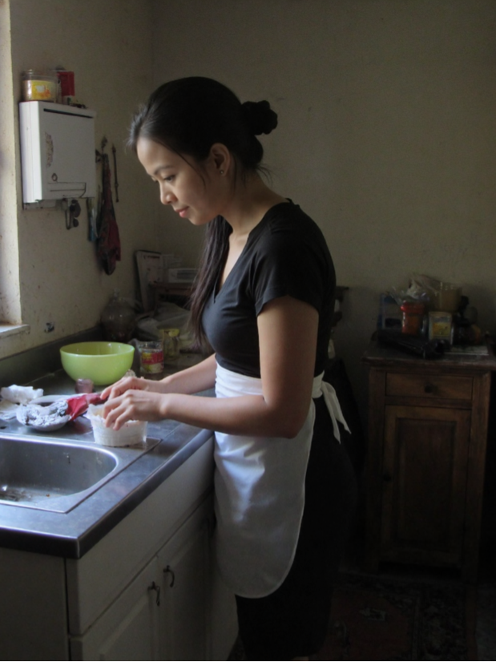
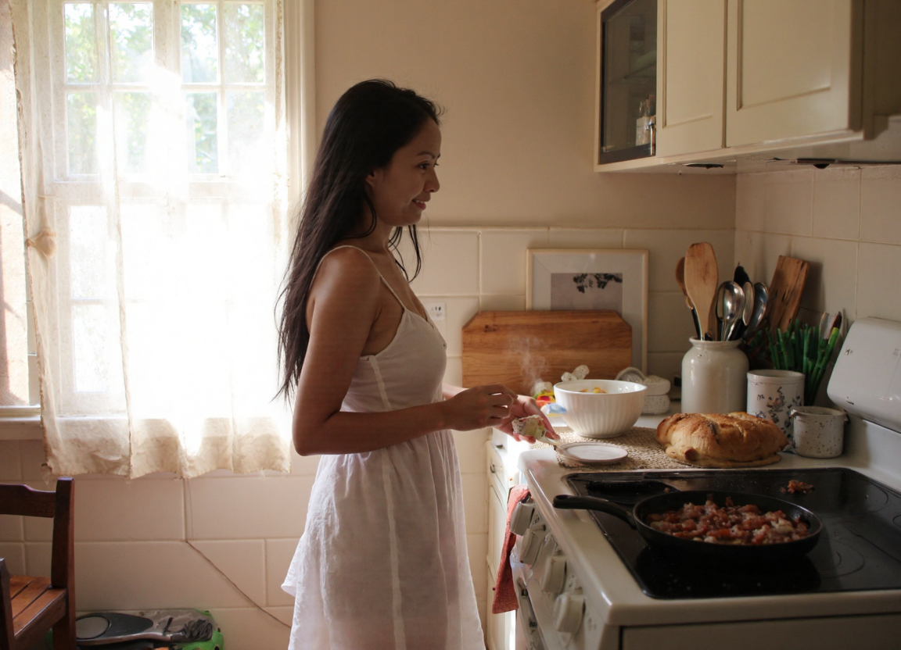

Feature Story
Employer's Playground
May 2026
A soft, personal fantasy. You don't let her thaw. Your hand slides down to her wrist, your fingers closing around it. "Come with me," you say — your tone leaving no room for refusal.
Read →Journal
Notes on light, stillness & desire



Feature Story
May 2026
A soft, personal fantasy. You don't let her thaw. Your hand slides down to her wrist, your fingers closing around it. "Come with me," you say — your tone leaving no room for refusal.
Read →
Fiction
May 2026
The morning light filtered through thin curtains, casting pale stripes across the unfamiliar bedroom. Joyce stirred awake, her body still adjusting to the new timezone, the new climate, the new everything.
Read →Fiction
May 2026
The story continues. A deeper pull, a harder choice — and a woman still finding her footing in a world that moves faster than she expected.
Read →
Love Letter
May 2026
My love… I love you so much… more than I ever had the courage to show, and that truth alone already hurts my heart.
Read →
Personal Essay
July 2018
Thailand. Five days that were enough to feel real and not enough to feel complete. A botanical garden outside Pattaya, a bench in a shaded corner, and the particular quality of afternoons that become memory before they are over.
Read →
Behind the Lens
April 2024
There is a window of light just before the afternoon turns — when everything softens and the world holds its breath. That is when I first understood what it means to be truly seen.
Series Notes
March 2024
We chose the afternoon deliberately — the hour when the light turns green-gold through the leaves and shadows stretch long. There was no hurry. The whole series was built on patience.
Series Notes
February 2024
The domestic series began as an experiment — what happens when you bring editorial lighting into the intimacy of everyday spaces? The result was something unexpected: images that feel both familiar and charged.
Night Work
January 2024
The city at night has its own grammar — short sentences, long silences. We moved through it slowly, looking for the pockets of warmth between street lights. Every shadow told a different version of the same story.